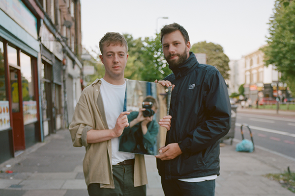

MOUNT KIMBIE
Mount Kimbie are the influential English electronic music duo of Dominic Maker and Kai Campos from London, UK. Over a ten year period, three critically acclaimed albums and countless world live tours they have consolidated their position at the forefront of the international electronic scene. Their DJ and radio sets have also developed a formidable reputation throughout this period. They have offered a glimpse into the duo's varied influences and avant-garde tastes from across all forms of electronic music while also further revealing a harder, club-focused orientation explored previously with their hit single ‘Made To Stray’ accompanying DJ Koze remix, followed by the release of their original production ‘Bells’ on Koze’s Pampa compilation series.
Following sets at Warehouse Project, Outlook, Bestival, Dimensions, Field Day, ADE and more have cemented them as key artists for a generation of clubbers. Fresh from the release and touring of ‘Love What Survives’ on Warp Records, the duo teamed up with Actress for a series of B2B DJ sets across Europe. The pair are responsible for two of last year’s finest albums - ‘AZD' and ‘Love What Survives’ - and share a love of techno and atmospheric, experimental club tracks.